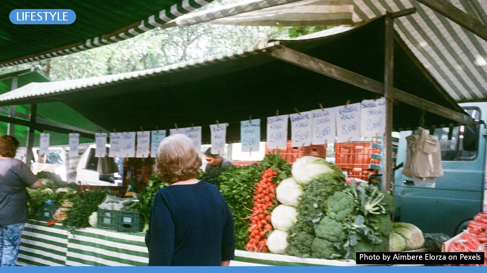
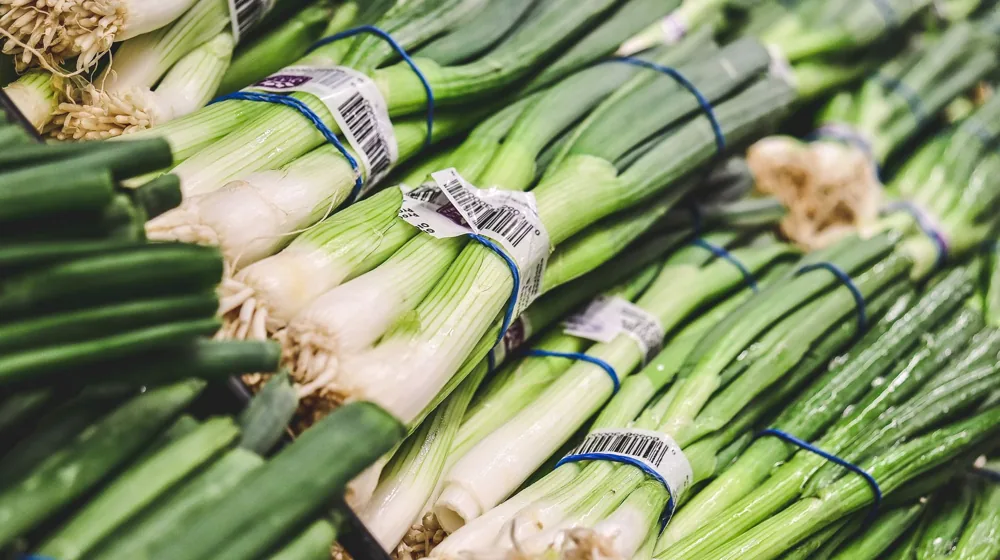

제철 채소 똑똑하게 고르고 보관하는 7가지 비법, 신선함이 달라져요!
사진: Aimbere Elorza / Pexels (무료 이미지, 출처 표기)
잃어버린 채소의 신선함, 이젠 달라질 시간!

신선한 제철 채소는 식탁을 풍성하게 만들지만, 제대로 고르거나 보관하지 못해 금방 시들어버리는 경험 있으신가요? 제철 채소의 맛과 영양을 최대한 살려 오랫동안 즐기려면 올바른 선택과 보관법이 중요합니다. 이 글에서는 신선한 제철 채소를 고르는 핵심 비법부터 종류별 맞춤 보관 노하우까지, 여러분의 고민을 해결해 줄 실용적인 정보들을 담았습니다.
제철 채소, 왜 중요할까요? 맛과 영양 두 배로 즐기기
제철 채소는 해당 시기에 가장 잘 자라기 때문에 맛과 향이 최고조에 달하며 영양소 함량 또한 풍부합니다. 또한, 자연의 섭리에 따라 재배되므로 불필요한 비료나 농약 사용이 적어 더욱 건강하게 섭취할 수 있습니다. 수확량이 많아 가격 부담도 적으니, 현명한 소비를 위해서라도 제철 채소를 선택하는 것이 좋습니다.
이것만 알면 실패 ZERO! 신선한 제철 채소 고르는 법
신선한 채소를 고르는 것은 보관만큼이나 중요합니다. 다음 7가지 핵심 포인트를 기억하면 실패 없이 좋은 채소를 고를 수 있습니다.
- 색깔과 윤기: 채소 고유의 선명한 색을 띠고 윤기가 흐르는 것을 선택합니다. 누렇게 변했거나 색이 바랜 것은 피하세요.
- 표면의 탄력: 만졌을 때 단단하고 탄력이 느껴지는 것이 좋습니다. 물렁하거나 쭈글거리는 것은 신선도가 떨어진 증거입니다.
- 이물질 및 상처 확인: 흙이나 이물질이 적고, 흠집이나 무른 부분이 없는지 꼼꼼히 살핍니다. 상처 부위부터 쉽게 상하기 시작합니다.
- 뿌리와 줄기 상태: 뿌리는 마르지 않고 싱싱해야 하며, 줄기는 단단하고 곧게 뻗은 것이 좋습니다.
- 무게감: 크기에 비해 묵직한 것은 수분 함량이 높아 신선하다는 의미입니다.
- 향기: 채소 특유의 신선한 향이 나는 것을 고릅니다. 좋지 않은 냄새가 나면 피하는 것이 좋습니다.
- 포장 상태: 낱개 구매가 어렵다면 포장 안의 상태를 육안으로 확인하고, 습기가 차 있거나 변색된 부분이 없는지 확인합니다.
채소 종류별 맞춤 보관법: 더 오래 신선하게
채소는 종류에 따라 최적의 보관 환경이 다릅니다. 2026년 9월 기준으로, 농촌진흥청 등 전문가들이 권장하는 보관 방법을 참고하여 제철 채소의 신선도를 최대한 유지해 보세요.
참고: 토마토는 냉장 보관 시 맛이 떨어질 수 있으므로, 익은 정도에 따라 실온 보관 후 냉장하는 것이 좋습니다. 오이는 냉해에 약하니 신문지에 싸서 냉장고 채소칸에 보관하는 것이 효과적입니다.
보관 전 이것만은 꼭! 채소 손질 & 세척 가이드
채소를 보관하기 전 적절한 손질과 세척은 신선도 유지에 큰 영향을 미칩니다. 일반적으로는 먹기 직전에 세척하는 것이 좋지만, 미리 손질해 보관하면 요리 시간을 단축할 수 있습니다.
- 흙과 이물질 제거: 흙이 많이 묻은 뿌리채소는 흙을 털어내거나 가볍게 씻어 물기를 제거한 후 보관합니다. 물기가 남아있으면 쉽게 무르거나 썩을 수 있습니다.
- 상한 부분 제거: 시들거나 무른 잎, 상한 줄기 등은 잘라내어 다른 부분이 상하는 것을 방지합니다.
- 물기 완벽 제거: 씻어서 보관해야 할 채소는 반드시 키친타월 등으로 물기를 완벽하게 제거한 후 보관 용기에 담습니다. 물기는 부패의 주범입니다.
- 적절한 크기로 분리: 대파나 무 등은 사용 용도에 맞춰 미리 잘라 밀폐 용기에 담아 보관하면 편리합니다.
정확한 사항은 각 채소별 공식 보관 가이드나 농촌진흥청 웹사이트에서 다시 확인하시길 권장합니다.
궁금증 해결: 제철 채소 보관 시 자주 묻는 질문
많은 분들이 제철 채소 보관에 대해 궁금해하는 질문들을 모아봤습니다.
Q1: 채소를 얼려도 되나요?
A1: 네, 일부 채소는 냉동 보관이 가능하며 오히려 영양소 손실을 줄일 수 있습니다. 시금치, 브로콜리, 당근 등은 데친 후 물기를 제거하여 냉동하면 오래 보관할 수 있습니다. 해동 시에는 바로 요리에 활용하는 것이 좋습니다.
Q2: 채소 보관 용기가 꼭 필요한가요?
A2: 보관 용기는 채소의 습도와 온도를 일정하게 유지하고 외부 공기와의 접촉을 줄여 신선도를 오래 유지하는 데 도움을 줍니다. 밀폐 용기나 지퍼백 등을 활용하면 좋습니다. 2026년 9월 기준, 시중에는 다양한 기능성 채소 보관 용기가 출시되어 있습니다.
Q3: 사과와 함께 보관하면 안 되는 채소가 있나요?
A3: 사과는 에틸렌 가스를 방출하여 다른 과일이나 채소의 숙성을 촉진합니다. 특히 잎채소나 오이, 감자 등은 사과와 함께 보관하면 쉽게 상하거나 싹이 날 수 있으므로 따로 보관하는 것이 중요합니다.
신선한 제철 채소로 건강한 식탁을 만들어보세요!
제철 채소를 현명하게 고르고 올바른 방법으로 보관하면, 언제든지 신선한 식재료로 건강한 식사를 준비할 수 있습니다. 오늘 알려드린 팁들을 활용하여 제철 채소의 맛과 영양을 온전히 즐겨보시길 바랍니다. 작은 습관의 변화가 여러분의 식탁을 더욱 풍요롭게 만들 것입니다.
🔗 이 글도 함께 보면 좋아요: 사찰 워케이션 완벽 가이드: 와이파이·업무환경 제대로 활용하는 법
관련 추천 상품
채소 보관 용기, 야채 밀폐용기, 신선 보관 팩 관련 인기 상품 보러가기
이 포스팅은 쿠팡 파트너스 활동의 일환으로, 이에 따른 일정액의 수수료를 제공받습니다.